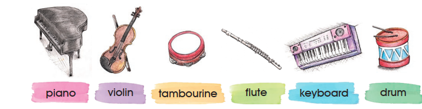
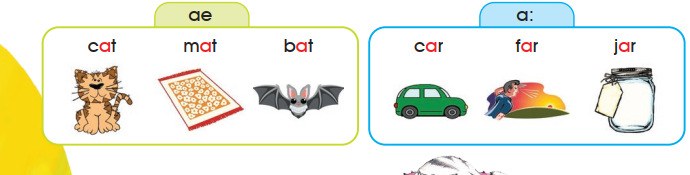
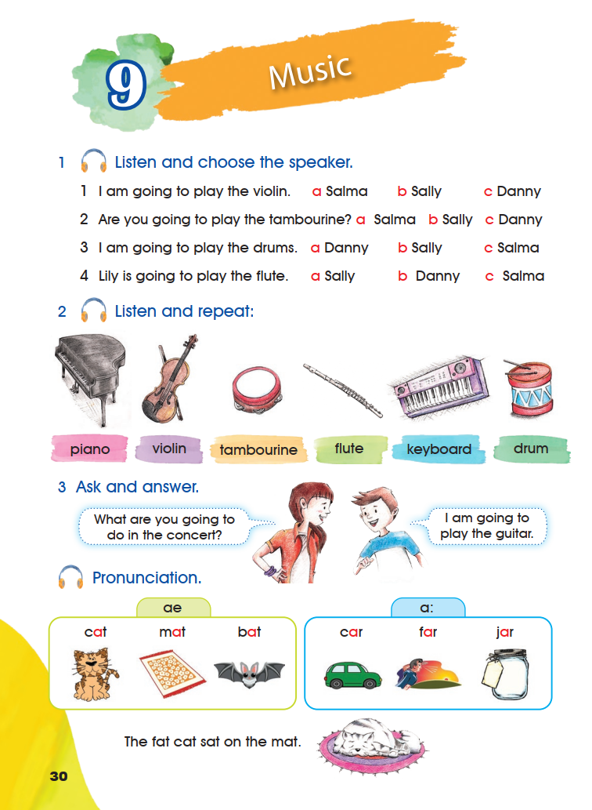
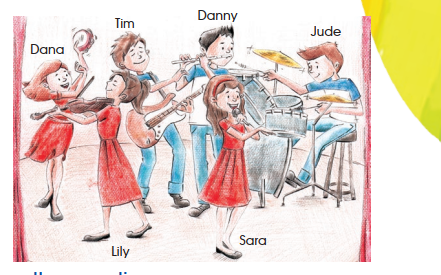
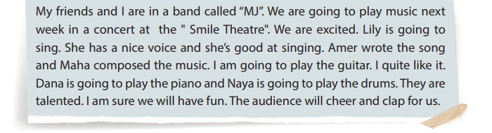
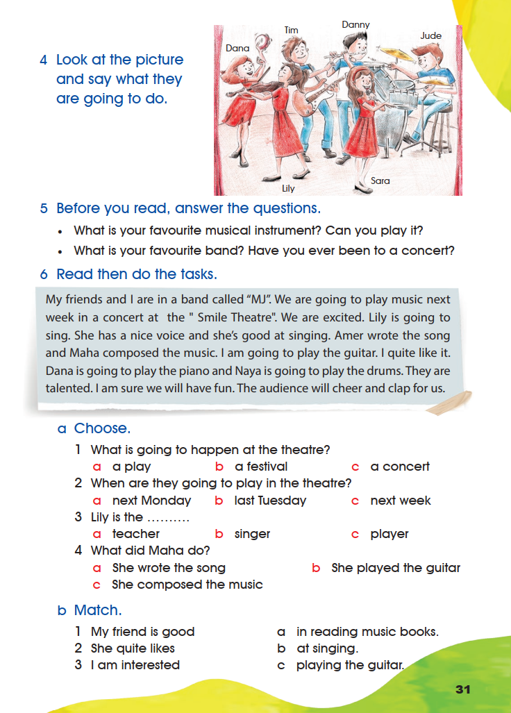
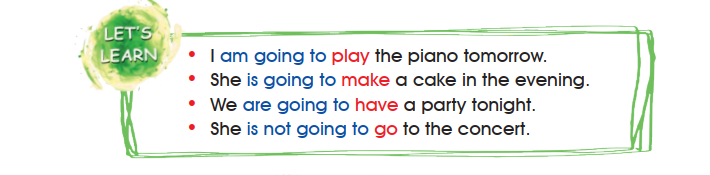
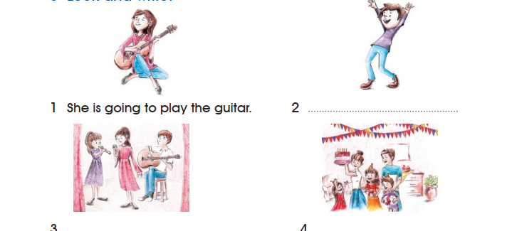
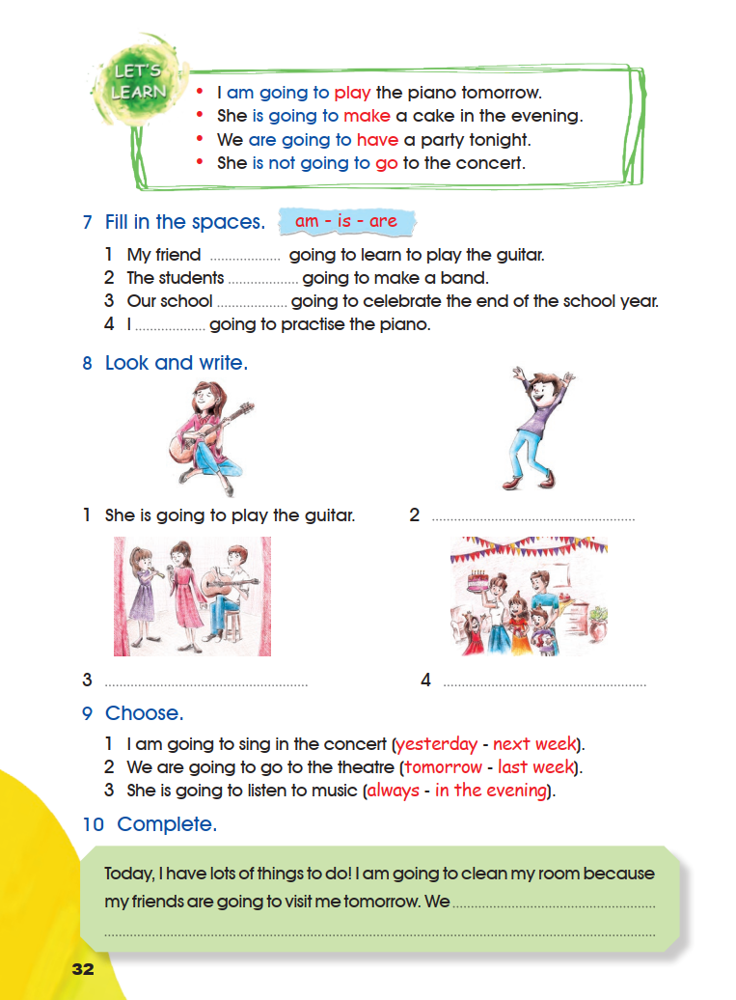

Pupil’s Book — Music
Activities 1–10 and the Pronunciation box appear in their original order across pages 30–32, with the green grammar box in its printed place. The picture task on page 31 and the reading text on page 31 are kept apart, exactly as they are printed.
1 Listen and choose the speaker.
- 1
I am going to play the violin.
- 2
Are you going to play the tambourine?
- 3
I am going to play the drums.
- 4
Lily is going to play the flute.
The three names are printed in a different order in each item, so the printed order is kept exactly.
0 of 4 answered.
2 Listen and repeat:

- piano
- violin
- tambourine
- flute
- keyboard
- drum
The sixth label is printed drum here, in the singular.
3 Ask and answer.
What are you going to do in the concert?
I am going to play the guitar.
This is a speaking task built on the printed picture and the two printed bubbles. The page prints no key.
Pronunciation.

æ
- cat
- mat
- bat
ɑː
- car
- far
- jar
The fat cat sat on the mat.
1 Listen and choose the speaker is decided by the recording. The recording was not supplied, so this page keeps the four questions and every printed name and provides no answer.
2 Listen and repeat and Pronunciation are speaking tasks; the page prints no key for them.
3 Ask and answer is a speaking task built on the printed picture; the page prints no key.
Nothing on this page is marked correct or incorrect for the listening items. Choosing an option only stores your own attempt on this browser.
Open the source page · Pupil’s Book · p. 30
This is the original supplied image, shown without redrawing or generation.

4 Look at the picture and say what they are going to do.

This activity is answered from the printed picture only. The six children in the picture are Dana, Lily, Tim, Danny, Sara and Jude. The reading text in activity 6 below names a different group of children; the two are printed separately on the page and are not connected here.
0 of 6 filled.
5 Before you read, answer the questions.
Bullet 2 prints two questions in one line. It is kept in one field exactly as printed.
0 of 2 filled.
6 Read then do the tasks.

My friends and I are in a band called “MJ”. We are going to play music next week in a concert at the " Smile Theatre". We are excited. Lily is going to sing. She has a nice voice and she’s good at singing. Amer wrote the song and Maha composed the music. I am going to play the guitar. I quite like it. Dana is going to play the piano and Naya is going to play the drums. They are talented. I am sure we will have fun. The audience will cheer and clap for us.
The passage is printed with "MJ" and with a space after the opening quotation mark in " Smile Theatre". Both are reproduced as printed. The passage names Lily, Amer, Maha, Dana and Naya; it says Lily will sing and Dana will play the piano.
a Choose.
- 1
What is going to happen at the theatre?
- 2
When are they going to play in the theatre?
- 3
Lily is the ……….
- 4
What did Maha do?
0 of 4 answered.
b Match.
The preposition is printed inside each option: in reading music books, at singing, and the plain -ing form for the last one.
0 of 3 answered.
4 Look at the picture and say what they are going to do: this is a picture task and the page prints no key. Examples read from the printed picture only, not unique answers: Dana is going to play the tambourine. · Lily is going to play the violin. · Tim is going to play the guitar. · Danny is going to play the flute. · Sara is going to sing. · Jude is going to play the drums.
5 Before you read is personal; the page prints no key.
6 a Choose: 1 c a concert · 2 c next week · 3 b singer · 4 c She composed the music.
6 b Match: 1 b at singing · 2 c playing the guitar · 3 a in reading music books.
Every answer in activity 6 is stated in the printed passage. The picture examples in activity 4 are read from the printed picture; the passage does not describe those six children and is not used to check them.
Open the source page · Pupil’s Book · p. 31
This is the original supplied image, shown without redrawing or generation.

Let’s Learn

- I am going to play the piano tomorrow.
- She is going to make a cake in the evening.
- We are going to have a party tonight.
- She is not going to go to the concert.
7 Fill in the spaces.
- am
- is
- are
- 1
My friend going to learn to play the guitar.
- 2
The students going to make a band.
- 3
Our school going to celebrate the end of the school year.
- 4
I going to practise the piano.
0 of 4 filled.
8 Look and write.

Item 1 is already printed on the page. The other three are open: more than one true sentence can be written about each printed picture.
0 of 4 filled.
9 Choose.
- 1
I am going to sing in the concert …
- 2
We are going to go to the theatre …
- 3
She is going to listen to music …
0 of 3 answered.
10 Complete.
Today, I have lots of things to do! I am going to clean my room because my friends are going to visit me tomorrow. We
0 of 1 filled.
7 Fill in the spaces: 1 is · 2 are · 3 is · 4 am.
8 Look and write: item 1 is printed on the page: She is going to play the guitar. Items 2–4 are open. Illustrative examples only, not unique answers: 2 He is going to cheer. · 3 They are going to play music. · 4 They are going to have a party.
9 Choose: 1 next week · 2 tomorrow · 3 in the evening.
10 Complete: this is open writing and the page prints no key. Illustrative continuation only: We are going to play music and eat cake in the garden.
Every answer in activity 7 is fixed by the printed word box. Every answer in activity 9 is fixed by the going to form printed in the sentence.
Open the source page · Pupil’s Book · p. 32
This is the original supplied image, shown without redrawing or generation.
